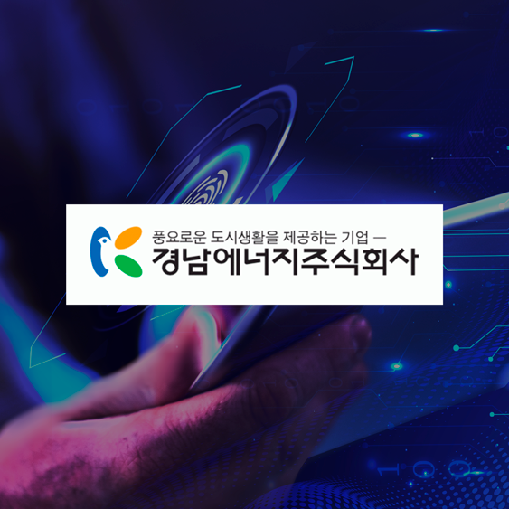
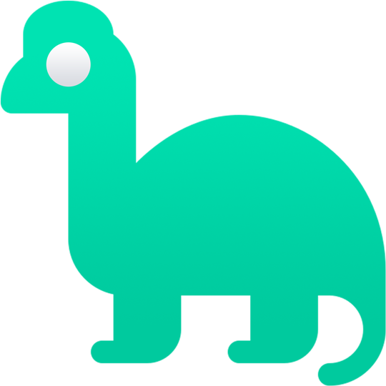
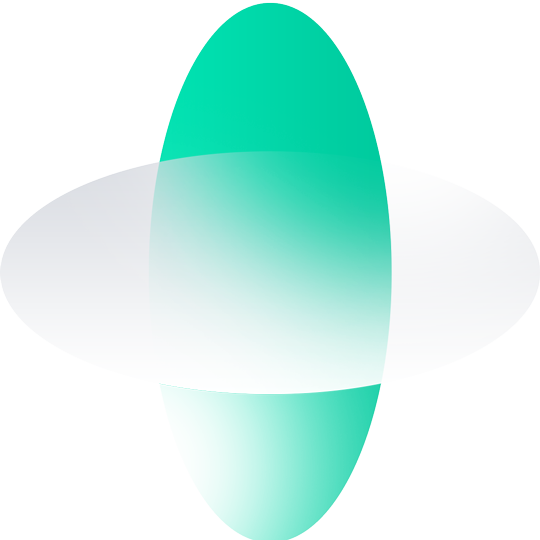
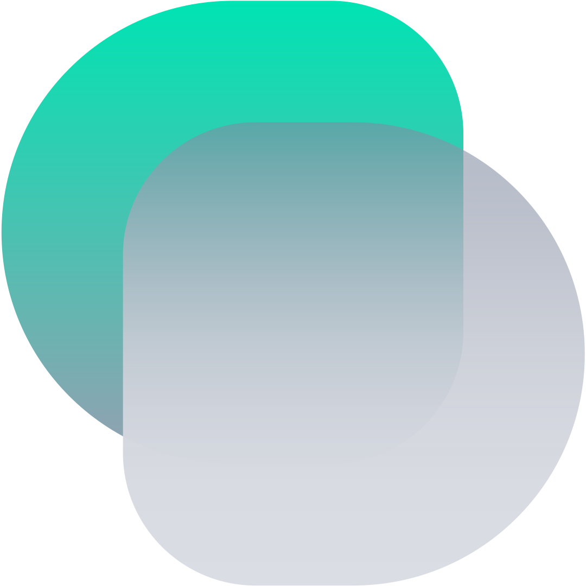

Our Vision
Augmentation of the Human Experience through Datafication
라온데이터의 비전
완벽한 데이터화를 기반으로 인간의 경험을 증강시킵니다.
Raondata augments the human experience through data and artificial intelligence technology.
라온데이터는 인간의 상호작용에 대해 고찰하고 데이터화하여 그 어떤 환경에서라도 인간의 커뮤니케이션 경험(HX)이 증강될 수 있는 솔루션을 제공합니다.
Our Mission
Seamless Digitization of the Human Experience
라온데이터의 미션
자연스러운 인간 경험의 디지털 전환
-
HX Digitization
Methods of learning and translating 'human experience' into data are being researched and developed at Raondata with the aim of delivering the ideal human experience in the future.
HX 디지털화
'인간의 경험'을 학습하고 데이터로 변환하는 방법을 라온데이터는 미래의 이상적인 인간 경험 전달을 목표로 연구 개발하고 있습니다.
-
HX Digital Twin
With refined 'human experience' data, AI clones optimized for specific needs can be developed to perform tasks for individuals or organizations.
HX 디지털 트윈
정제된 '인간 경험' 데이터를 통해 특정 요구에 최적화된 AI 클론을 개발하여 개인 또는 조직의 작업을 수행할 수 있습니다.
-
HX Data Conversion
Real-time and non-real-time conversion of disparate 'human experience' data allow individuals or organizations to appear completely different persona for specific needs.
HX 데이터 전환
서로 다른 '인간 경험' 데이터의 실시간 및 비실시간 변환을 통해 개인 또는 조직이 특정 요구에 대해 완전히 다른 페르소나를 나타낼 수 있습니다.
Raondata's Technology
Digitization of the Human Experience
라온데이터 보유 기술
인간 경험의 디지털화
-
HX: Voice Interaction
Voice Machine Learning
Real human speech can be fully taught using Raondata's technology. In comparison to other existing voice learning technologies, Raondata can create a flawless voice model with a much smaller number of voice sources.
음성 학습
라온데이터의 기술력으로 실제 인간의 음성을 완벽하게 학습할 수 있습니다. 기존 타 음성 학습 기술에 비해 라온데이터는 훨씬 더 적은 양의 음성 데이터를 이용하여 완벽한 품질의 음성 모델을 구축할 수 있습니다.
-
HX: Voice Interaction
Speech Generation
With a previously taught voice, it is possible to construct natural dialogues that may be applied to a variety of environments and services.
음성 생성
한번 학습된 음성으로 다양한 환경과 서비스에 접목할 수 있는 자연스러운 대화 생성이 가능합니다.
-
HX: Voice Interaction
Voice Conversion
Raondata's voice conversion technology can seamlessly convert the user's voice into the voice of a completely different persona. In this procedure, data conversion using artificial intelligence technology, rather than mechanical modulation, replaces not only the pitch of the voice, but also the broader characteristics of the voice.
음성 전환
사용자의 음성을 완전 다른 인격체의 음성으로 완벽하게 전환합니다. 이 과정은 기계적 변조가 아닌 인공지능 기술을 통한 데이터 전환으로 목소리의 피치 뿐만아니라 전반적인 음성의 개성이 대체됩니다.
-
HX: Visual Interaction
V-Avatar Generation
The motion recognition technology recognizes the user's movements without the usage of an additional motion recognition device, and the avatar behaves identically. Anyone can employ virtual characters for their own objectives, such as virtual streaming and content creation, through this technology.
가상 아바타 생성
동작인식 기술로 별도의 동작인식장치 없이 사용자의 움직임을 인식하고 이를 기반으로 아바타가 똑같이 행동합니다. 이를 통해 버츄얼 스트리밍, 콘텐츠 제작 등 누구나 가상 캐릭터를 목적에 맞게 활용할 수 있습니다.
-
HX: Visual Interaction
Deepfake AI
Raondata's voice conversion technology can seamlessly convert the user's voice into the voice of a completely different persona. In this procedure, data conversion using artificial intelligence technology, rather than mechanical modulation, replaces not only the pitch of the voice, but also the broader characteristics of the voice.
딥페이크 AI
학습된 인격체의 모습을 이미지, 영상으로 완벽하게 복제할 수 있습니다. 다른 딥페이크와 달리, 라온데이터의 딥페이크 기술은 화자의 입 모양을 실제 말하는 대사에 맞추어 자연스럽게 움직임을 표현합니다.
B2B Works
Tech Delivery and Convergence
B2B 서비스
기술 공급 및 협업
-

AI / Pose Estimation
Real-time Avatar Generation for Ryan Holiday
라이언 홀리데이 사용자 실시간 아바타 생성
-

AI / Medical Imaging
AI Retina Disease Detection
AI 망막 질환 진단 보조 시스템
-

AI / Speech, Visual Synthesis
Virtual Persona of a Famous Korean Celebrity
송해 가상인간 생성
-

AI / Singing Voice Synthesis
AI Singing Creation of Famous Korean Singer
가수 남진 음성 & 노래 생성
-

AI / Data Analysis
AI CX Insight Solution for Korean Energy Company
경남에너지 CX 데이터 자동 분석 솔루션
B2C Works
Raondata's own Solution as a Service
B2C 서비스
라온데이터의 솔루션 서비스
-

AI CX Insight Solution
NETI
NETI collects and refines the company's consumer records across multiple channels and in any format in order to provide the necessary insights.
인공지능 고객 인사이트 솔루션
네티
어떤 형식이든 기업의 고객 상담 기록을 자동으로 수집 및 데이터 정제하여 필요한 인사이트를 제공합니다.
-

Generative AI Desktop Assistant
VH Studio
Chat-GPT-based AI characters can engage in an indefinite number of real-time interactions. On the user's desktop, the desktop overlay environment enables the character to function as a search engine.
생성 AI 데스크톱 비서
VH 스튜디오
Chat GPT기반 AI 캐릭터와 실시간으로 무궁무진한 상호작용을 진행할 수 있습니다. 데스크톱 오버레이 환경으로 컴퓨터에서 작업 중일 때 서치엔진의 역할을 수행할 수 있습니다.
-

Realtime Persona Converter
Stitch
Using voice conversion technology powered by artificial intelligence, the user's voice can be converted into a completely distinct third party's voice and transmitted in real time. Users can experience augmented digital content production and voice conversation through various voice assets.
실시간 페르소나 전환기
스티치
인공지능 음성 전환 기술을 통해 실시간으로 사용자의 음성을 완전히 다른 제 3자의 음성으로 전환시켜 송출할 수 있습니다. 다양한 목소리 에셋을 통해 사용자는 증강된 디지털 콘텐츠, 보이스챗 경험을 느낄 수 있습니다.
Proof of Raondata
Honors & Awards
라온데이터의 증명
수상 경력 및 주요 이력
-
2021 Establishment of Raon Data Corporation 라온데이터 법인 설립
-
2nd Place in World Fake News Detection Competition 가짜뉴스 탐지 경진대회 세계 2위
-
1st Place in Artificial Intelligence Championship 인공지능 챔피언십 2021 우승 (중소벤처기업부 장관상)
-
3rd Place in Big-Star Problem Solver-Platform Playoff 대-스타 해결사 플랫폼 왕중왕전 장려상 (중소벤처기업부 장관상)
-
2022 Selected as a Venture Company in Republic of Korea 한국 벤처기업 선정
-
Establishment of R&D Center 기업부설 연구소 설립
-
2 Patents Registerd for AI Technology 인공지능 기술 특허 2건 등록
-
1st Place in Seoul Media Lab Startup Competition 서울 미디어랩 스타트업 경진대회 최우수상
-
1st Place in ASEAN International Entrepreneurship Competition 중국 아세안 국제 창업 경진대회 최우수상
-
2023 Selected as an Best Startup Partner in Shinhan Open Innovation 7th 신한 오픈 이노베이션 7기 우수 협업 기업 선정